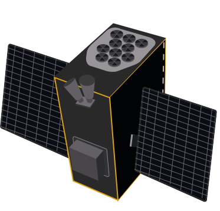

What is NEBULA?
NEBULA – Xplorer stands for “Netherlands Educational Satellite for Exploration of Binary-Linked Astrophysics – X-ray Observer”. The NEBULA-Xplorer is a compact, high-performance scientific satellite platform developed under SRON’s NEBULA program. It aims to deliver high-precision astrophysical observations from a 45-degree inclination orbit, supporting its X-ray instrumation and associated scientific objectives.
The goal of NEBULA
The mission has two goals:
- The scientific goal is to better understand how a black hole captures material from a companion star.
- The educational goal is for students from Dutch educational institutions to experience firsthand how to build a space mission from the ground up.
SRON is leading the NEBULA – Xplorer mission, contributing to a new generation of scientists, designers and technicians for Dutch space research.
About us
About 400 students will join SRON, 14 Dutch educational institutions and many industrial partners in developing this space mission from start to finish, led by scientists and engineers.
The Science
X-rays double stars
Many of the brightest objects in the Universe are X-ray binaries. These are combinations of an extremely compact object, such as a black hole or neutron star, and a companion star. Over time, the compact object extracts matter from its companion star. This releases lots of energy through a jet. Scientists do not yet fully understand this process. Especially the nature of the stream of matter right next to the black hole remains a big mystery.
The Science
Long observation periods
NEBULA-Xplorer will investigate how jets form and how X-ray binaries evolve. It will observe these objects for long periods of time to see how their emission varies on time scales from milliseconds to weeks. This long observation time makes it possible to combine X-ray activity with data from other wavelengths from other telescopes.
Instrumentation
Compact X-ray telescope
NEBULA – Xplorer will be a very compact X-ray space telescope, measuring only 110 x 85 x 50 centimetres. It can be made so small by using several cylindrical mirrors that reflect X-rays. The mission has one X-ray instrument on board that can measure how X-rays vary over a long period of time. The space telescope will use existing, commercial X-ray detectors. These will be cooled down to their optimum operating temperature of -35 degrees Celsius.
Instrumentation
Design
The students will be supported by SRON in designing, building, and testing the camera, electronics, and housing. They will also receive coaching from their educational institute and the industrial partners within the project. We develop NEBULA – Xplorer in close cooperation with the Dutch space industry, which provides the technical facilities to produce and test the various components.
The steps that need to be taken before launching
- Research
- Prototype, review and refine
- Build
- Take off
Partnerships
- Mrborijnland
- Lis
- Saxion
- Hogeschool van Amsterdam
- Hogeschool Utrecht
- De Haagse hogeschool
- Inholland
- Universiteit van Amsterdam
- Rijksuniversiteit Groningen
- Esatan-TMS
- Astos Solutions
- Universiteit Leiden
- Erasmus Universiteit Rotterdam
- TU Delft
- Techniek College Rotterdam
- Nova College
- ROC Mondriaan